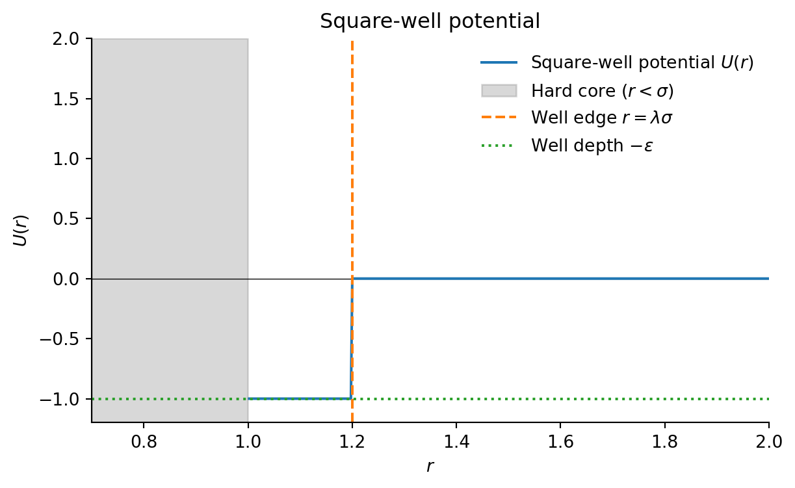
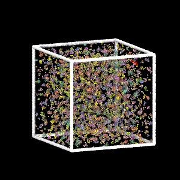
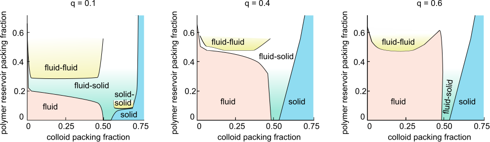
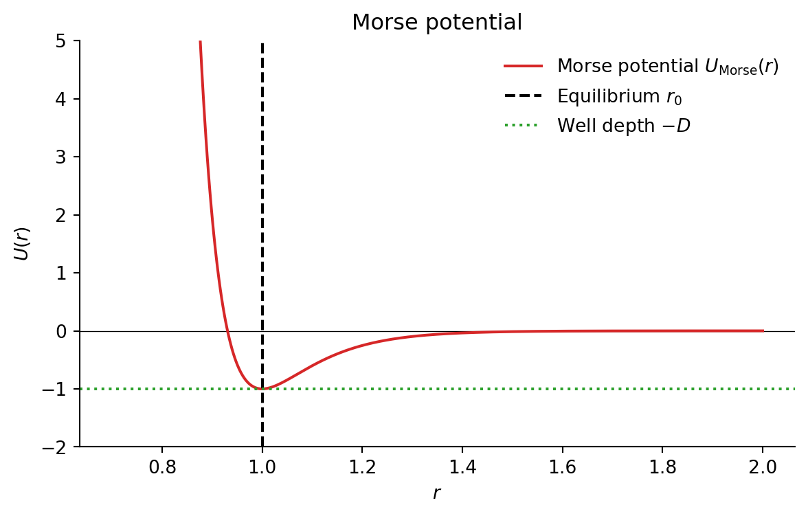
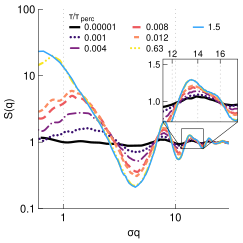
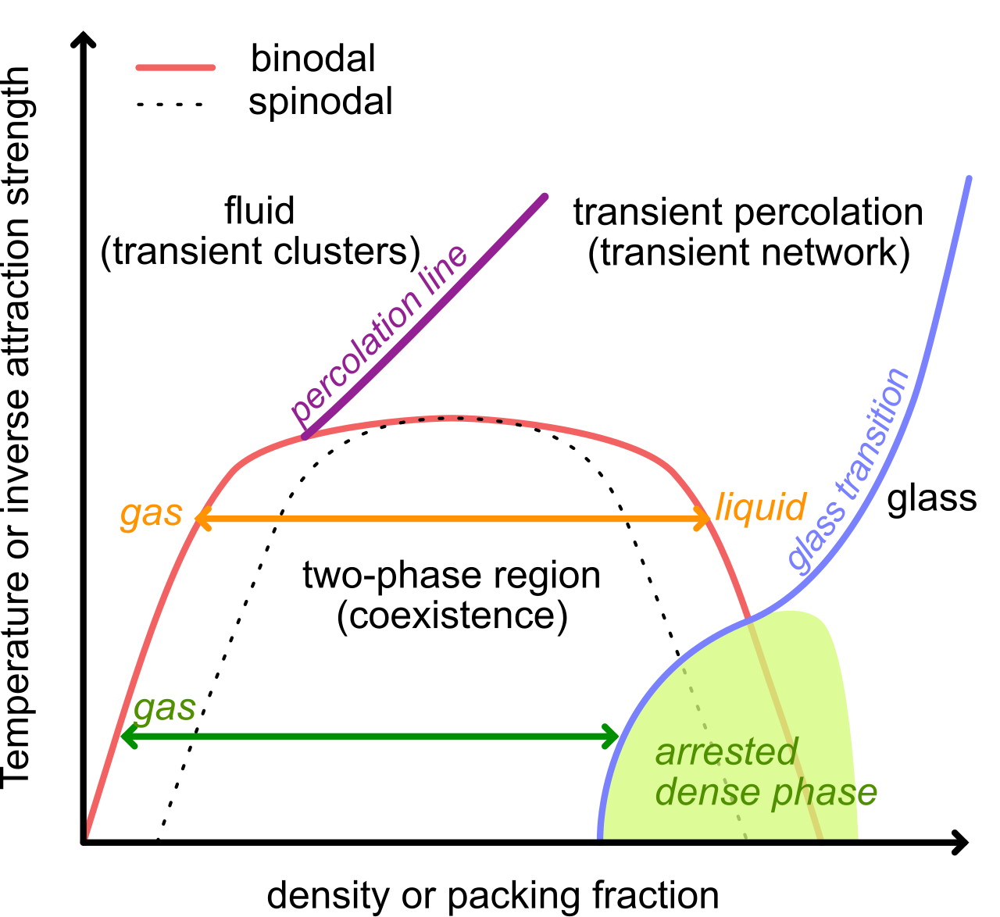

Complex Disordered Systems
Gelation
Francesco Turci
Today
- Physical gels and percolation
- Colloid-polymer mixtures
- Structure and characterization
- Arrested spinodal decomposition
What is a Physical Gel?
Physical gel: Particles/polymers connected via reversible, non-covalent bonds forming a percolating network
Key features:
- Bonds break/reform dynamically
- Energy ~ k_BT
- Self-healing possible
- Thermoreversible
Examples:
- Gelatin
- Agarose
- Yoghurt
- Paint, inks
Cross-links form via dense local regions (microcrystalline/glassy)
Physical vs Chemical Gels
Physical Gels
- Reversible bonds
- Energy ~ k_BT
- Dynamic network
- Thermoreversible
Chemical Gels
- Irreversible covalent bonds
- High energy barriers
- Permanent network
Key transition:
- Fluid → Gel occurs when a system-spanning cluster forms (percolation)
- Dramatic viscosity increase + elastic response
Gels are a second example of disordered solids (after glasses)
Percolation Theory
Problem: Square grid L\times L sites, randomly label N of them. When does a spanning cluster form?
- p = N/L^2 = occupation probability
- Percolation threshold p_c
- Below p_c: small clusters
- Above p_c: giant spanning cluster
2D square lattice: p_c \approx 0.5927
Transition: Continuous (2nd order)
Percolation Simulation
Percolation Transition
Percolation Threshold: p_c Values
Non-universal: p_c depends on lattice type and dimension
| Lattice | Dim | z | p_c^{site} | p_c^{bond} |
|---|---|---|---|---|
| Square | 2 | 4 | 0.593 | 0.5 |
| Triangular | 2 | 6 | 0.5 | 0.347 |
| Cubic | 3 | 6 | 0.312 | 0.249 |
| Hypercubic | 4 | 8 | 0.197 | 0.160 |
| Hypercubic | 6 | 12 | 0.109 | 0.094 |
Higher dimensions → lower p_c (easier to percolate)
Critical Exponents: Universal
Universal: Critical exponents independent of lattice details
P_{\infty}(p)\propto (p-p_c)^{\beta}
| Dimension d | \beta |
|---|---|
| 2 | 5/36 ≈ 0.14 |
| 3 | ≈ 0.41 |
| ≥6 | 1 (mean-field) |
Gels require percolation for mechanical stability!
Colloidal Gel Formation

MD simulation of dilute colloidal gel formation (largest cluster in red)
Percolating cluster → mechanical rigidity
Colloid-Polymer Mixtures
Depletion interactions like the Asakura-Oosawa model produce a very short ranged potential with strong attractive part. W_{\mathrm{AO}}(r)=-\frac{4 \pi \rho_p k_B T}{3} R^3(1+q)^3\left[1-\frac{3}{4} \frac{r}{R(1+q)}+\frac{1}{16}\left(\frac{r}{R(1+q)}\right)^3\right], \quad 2R<r<2(R+R_p), \quad q=\dfrac{R_p}{R}
attractive + very short ranged → sticky interaction
- Colloids cluster into nonequilibrium branched phase
- Binodal becomes metastable to fluid-solid coexistence

Phase diagram of colloid-polymer mixtures for varying polymer-colloid aspect ration q. Small
Simple Model Potentials
Square-well potential:
U(r) = \begin{cases} \infty & r < \sigma \\ -\epsilon & \sigma \leq r < \lambda \sigma \\ 0 & r \geq \lambda \sigma \end{cases}
- \sigma: particle diameter
- \epsilon: well depth
- \lambda: range parameter
Morse Potential (MD Simulations)
Smooth short-range attractive potential:
U_{\mathrm{Morse}}(r) = D \left[ e^{-2\alpha (r - r_0)} - 2 e^{-\alpha (r - r_0)} \right]
- D: well depth
- \alpha: steepness (controls range)
- r_0: equilibrium distance


Pair Correlations: g(r)
Radial distribution function g(r): best at short distances
- Captures cluster structure
- Sharp peaks at dilute concentrations
- Nearest/second-nearest neighbor shells
Structure Factor: S(q) and Fractals
Near percolation threshold, the loq-q trend from the trsucture factor links to the compressibility: power-law behavior:
Clusters become fractal objects with self-similar structure at all length scales.
For a fractal object with dimension D_f:
- Mass scales as M(R) \sim R^{D_f}
- Density correlations decay as \rho(r) \sim r^{-(d-D_f)}
Fourier transform of power-law correlations gives: S(q) \sim q^{-D_f}
- D_f: fractal dimension
- No characteristic length scale
- Typical 3D: D_f \approx 2.5

Arrested Spinodal Decomposition
How do gels form?
Scenario:
- Rapid quench into unstable region
- Phase separation begins (spinodal)
- Dense regions arrest (glass/jamming)
- Bicontinuous frozen structure
The picture suggest the progressive freezing of coarsening upon spinodal decomposition.
Phase Diagram: Arrested Spinodal

Arrested spinodal scenario, see Zaccarelli et al 2007
Key lines:: - Binodal (red): liqiid-gase coexistence at equilibrium - Spinodal (dashed): limit of stability of the metastable phases. Instability (i.e. spinodal decomposition) starts inside - Percolation (purple): At some density, the clusters percolate (span the system) - Glass transition (blue): Dense phase becomes dynamically arrested (non-ergodic)
Gel path: Rapid cooling → arrested dense phase + vapor